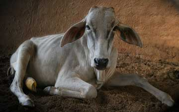

Bihari
Is a Bull, born on 2007-02-13, who joined us on 2007-09-27.
I got hit by a car about two months ago which fractured my rear leg in two places. The driver didn't even stop as he was rushing his boss to take darshan! No brains! The scriptures declare that one of the symptoms of the neophyte devotee is that he detects the presence of the Lord in the temple, but nowhere else. Do these pilgrims think they will get the blessings of the Lord if they run over the personification of religion while rushing to the Temple? Not possible! Lord Gopal is pleased if the cows are pleased. How do you think He feels when we are sad? Use your brains! Drink less buffalo milk! Do you think that putting your Rs.100 or Rs.500 in the hundi changes everything? Fast cars, yes; hand phones, yes; satellite TV's, yes; extra money in the pocket, yes; but NO brains! Where will it end? Their reckless driving will only get them to Hell on time... or maybe a little early. In any case Dr. Lavania has patched me up with a PVC cast and I am eating my way back to good health. For now I am being hosted in the recovery ward and should stay in here for a couple of months. Wish me luck and watch out for wreckless drivers when you next visit the Dhama.
Bihari is sponsored by Carl and Stella Herzig, USA